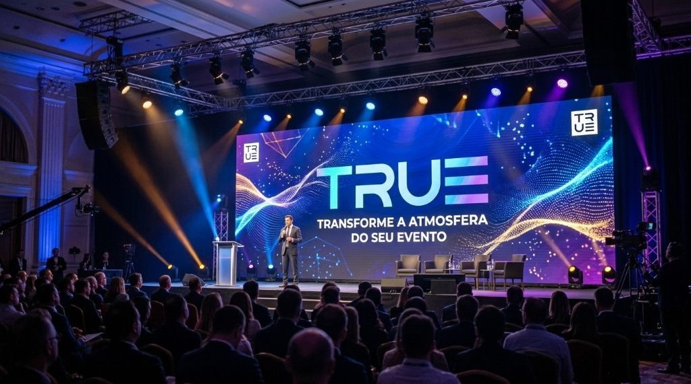
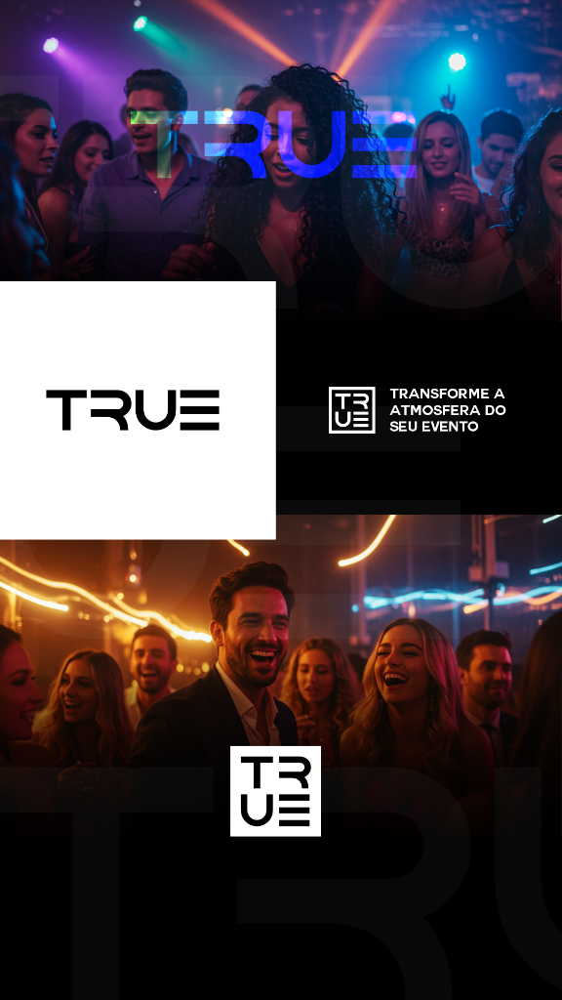
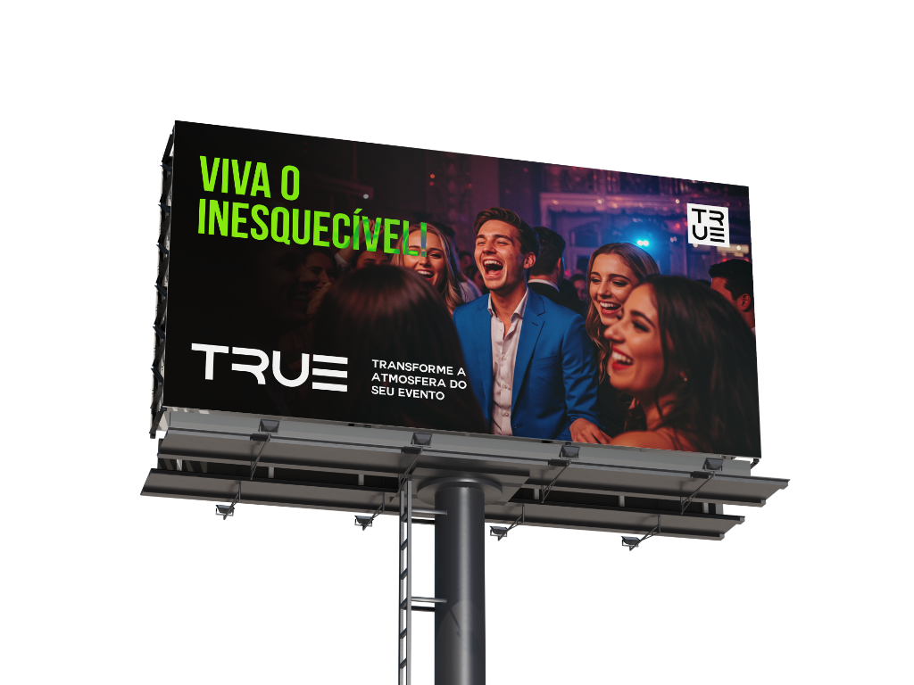

Transforme a atmosfera.
Viva o inesquecível.
Branding completo para a TRUE, marca dedicada a transformar a atmosfera de eventos sociais, formaturas e experiências corporativas. O projeto estabelece uma arquitetura gráfica dupla — palavra-marca expandida e selo modular compacto — pensada para brilhar sob a luz dos palcos, vestir a equipe de operação e marcar presença na mídia urbana.

Duas assinaturas.
Uma presença imediata.
No universo de eventos, uma identidade visual precisa funcionar tanto na largura cinematográfica de um telão de LED quanto no espaço reduzido de uma manga de camiseta ou canto de transmissão. Para responder a esse desafio, o logotipo da TRUE foi desenhado com geometria customizada, onde a letra E se converte em três barras horizontais que evocam equalizadores, feixes de luz e ritmo.
A partir das mesmas formas nasce o monograma em bloco (TR / U≡): um selo quadrado emoldurado que sintetiza o nome em quatro quadrantes perfeitamente equilibrados, acompanhado pelo posicionamento verbal “Transforme a atmosfera do seu evento”.

Articulação entre o logotipo principal, o selo em quadrado, o posicionamento verbal e a fotografia noturna.

Outdoor “Viva o Inesquecível!” combinando fotografia de celebração e tipografia de alto impacto.
Contraste que acompanha
a luz de cada evento.
Construída sobre uma base sólida em preto e branco, a identidade da TRUE absorve e valoriza a iluminação cênica de qualquer produção — do azul elétrico e violeta das pistas de dança ao verde-limão vibrante das peças de mídia exterior.
Nos fundos escuros, versões gigantes do logotipo em baixo contraste criam textura gráfica nas composições, enquanto a chamada “Viva o inesquecível!” conecta a entrega técnica da empresa à emoção vivida pelo público.
Do linear
ao modular.
A transição fluida entre a palavra-marca horizontal e o selo 2×2 garante leitura perfeita em qualquer proporção de tela ou impresso.
A luz como
matéria-prima.
Tipografia alva e contrastes intensos pensados para ambientes noturnos, projeções em LED e fotografia com luzes de palco.
Uma assinatura
que mobiliza.
O manifesto “Transforme a atmosfera do seu evento” atua como elemento gráfico recorrente ao lado do símbolo.
A identidade em quem faz
o espetáculo acontecer.
Em grandes cerimônias, formaturas e congressos, a equipe de produção precisa ser identificada com rapidez sem interferir na estética do evento. A camiseta técnica preta aplica o logotipo expandido no peito, o manifesto na barra inferior e o selo quadrado no alto das costas e nas mangas.
Já nas operações de arena, os moletons vermelhos destacam os coordenadores de pista com o monograma ampliado na frente e a assinatura institucional nas costas, mantendo unidade visual com os totens e telões de palco ao fundo.